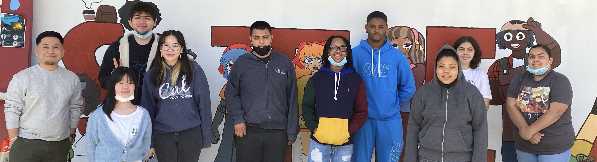

I was responsible to design Agile User Stories (JIRA) for the Strategic Customer Group (SCG) site by meeting with technology leads and stakeholders to capture business requirements while ensuring proper UI/UX design requirements. I also created a Sharepoint site for JET Cargo for Ponvory. Worked with Brand partners and across Product Lines to leverage existing SharePoint site template and incorporate Ponvory brand requirements into a new site. Guided brand team in developing a strategy for their website structure, then proceed to set up the site, and engage with brand to further enhance the site. On another project, I built analytics dashboards for Spravato to enable a comparison of metrics before and after a website redesign, from gathering requirements, learning Google Data Studio and Google Analytics technologies, and building the dashboard to meet business requirements. Presented a demo of the dashboard to leadership/business/agency teams.
As a computer science tutor, I tutored and co-taught code.org's "Computer Science Principles" course to prepare our students for their AP Computer Science Principles exam in May. I helped students with any programming questions they had, created/adjusted lesson plans with the instructor, and also co taught the class. Through my lectures, our students learned app development, procedural programming, scope, functions, loops, the list data structure, and algorithms.
As a student mentor, I was responsible to mentor a group of students throughout the duration of their project. My responsibilities were to assist students to create a research question that meets the scope of the work load for a week long challenge.Furthermore, I also helped/guided participants with little to no programming experience in Python, lend my programming knowledge to students so they can think abstractly to find solution to their blockers, help students debug their code, and help participants create meaningful data visualizations that tell a story.
At XSEDE's Advanced Computing For Social Change, I learned and worked with multidisciplinary teams to apply data analysis and computational thinking to a social challenge. I was able to get hands on experience with HPC and ran, tracked, and stopped Jupyter Notebook jobs via TACC's supercomputers. Within these jobs, I parsed CSV files, created DataFrames, and wrote scripts to create appropriate data visualization with effective and engaging designs.
At NASA DIRECT STEM, I was mentored and trained with professionals from UC Irvine, and JPL in computational physics, cloud computing, and data analysis by attending workshops that directly met NASA’s mission goal and standards. My selected contributions consisted of reinforcing my python skills by analyzing and developing two-dimensional and three-dimensional statistical graphs consisting of climate change data. With the contributions from XSEDE and TACC, I also had hands on experience to upload my work to supercomputers and understand their fundamental functions.
- Eclipse IDE
- Visual Studio Code
- PyCharm
- Sublime Text
- MySQL WorkBench
- FileZiila (File Transfer Protocol)
- WinSCP (File Transfer Protocol)
- Globus Connect Personal
- Microsoft Office (Word, PowerPoint, Excel)
- Data flow diagram (DFD), Software design and implementation
- GitHub
- Java Servlets